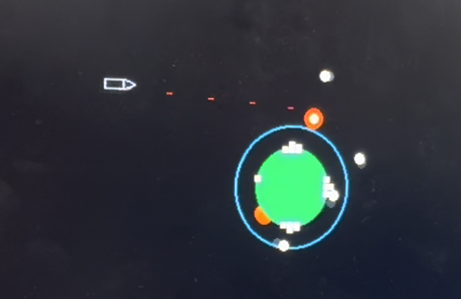
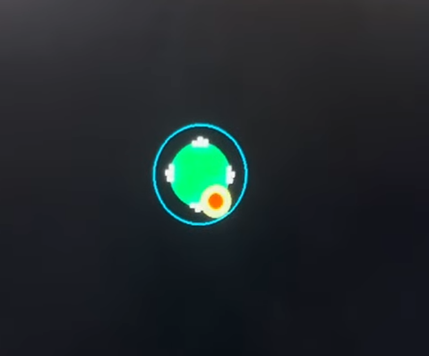
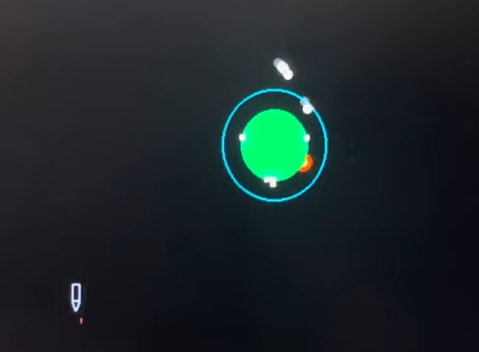

Asteroid Defense!
A 2D gravity-based asteroid defense game.
Demo
Intro
For our final project, we implemented an 80s-inspired space-themed arcade game. We based our design off of the classic game asteroids, wherein the player controls a rocket ship as it navigates and destroys asteroids with a laser. However, we introduce a unique twist - the player must defend a planet (placed in the center of the screen), and navigate around it subject to orbital physics. The player controls the rocket ship using a joystick with 8 different combinations of directions and a miniature peddle for thrust, while continuously shooting lasers. Asteroids spawn randomly in clumps at different corners of the screen and spread out after orbiting the planet. The planet is home to 4 cities at the east, west, north, and south faces, each with three lives. Upon collision with an asteroid, a building from the nearest city will be destroyed. Once all cities are gone, or the player's ship has collided with an object three times, the game is over. Each laser makes a high frequency sound, and the thrust and explosion sounds utilize white noise.
Figure 1. Asteroids!
High Level Design
Gameplay
Our main goal for this game was to create a gameplay loop that incorporated the somewhat unintuitive nature of orbital mechanics. We wanted to force the player to develop a basic understanding of these mechanics to be able to effectively navigate the play-space, and successfully shoot down asteroids. The main way we did this was by limiting the navigation and offensive options of the player.
The player controls an orbiting rocket ship which can rotate freely in space, but can only accelerate in the direction it is pointing. This forces the player to learn to understand how the direction of thrust in a rocket affects its orbit. In a game without gravity, the navigation would be as simple as pointing the rocket towards the location the player wished to go to, and hitting the accererator. Howver, in orbit, this is not so simple. Acceleration always affects the shape of the player's orbit. For example, acceleration in the direction of the rocket's current velocity will raise the height of the orbit on the oposite side of the planet. Conversely, accelerating against the direction of the rocketship's current velocity will lower the height of the orbit on the oposite side of the planet, potentially enough that the orbital path intersects with the planet, causing the rocket to crash unless other action is taken. We chose to have the edges of the screen loop around to each other rather than making them hard barriers to make sure the rocket is always being affected by gravity. Raising the orbit enough that the rocket hits the edge of the screen will mean that the rocket loops around to the opposite edge of the screen. This was found to be a much smoother experience than just bouncing the ship off the edge of the screen, which felt jarring during gameplay testing
The rocket can only shoot lasers in the direction it is facing. This causes an inherent tradeoff with the thrust of the rocket, as it can also only be applied in the direction of the rocket. Say, for example, the player wants to shoot at a group of asteroids on the far side of the screen. These asteroids are out of range of the rocket's lasers, and so the player must make a navigation choice in order to place the rocket in a position it can shoot the asteroids. Thrusting towards the asteroids could cause the rocket to raise it's orbit height on the far side of the planet so much that the rocket would be even farther from the asteroids after the pass, giving them more time to spiral inwards if the player cannot manage to shoot all of them. If the dynamics of the situation are slightly different, accelerating towards the asteroids could cause the rocket to lose all of its velocity relative to the planet, risking the rocket falling into the planet and crashing unless the player can add enough speed back after shooting the asteroids to regain a stable orbit.
Making these types of descisions and overcoming challenges is what makes the core of the game fun to play, and so it was important to us to tune the parameters of the game to make sure the player encounters these choices regularly. This is why the asteroids come in waves from different corners of the screen, and why their positions and velocities are slightly randomized. The asteroids slowly spread out as they spiral inwards towards the planet, forcing the player to navigate the space if they want to shoot all of them down.
Gravity Simulation Background Math
The whole game runs on top of a simple 2D gravity simulation that uses Newton's law of gravity to update the positions of the ship and asteroids every frame. The following psudeocode represents the simplest possible version of this algorithm which simulates just one pointlike ship orbiting a pointlike planet:
//loop repeats every frame while(1){ //calculate angle between center of ship and center of ship angle = atan2(the_ship.y-the_planet.y, the_ship.x - the_planet.x); // calculate the squared distance between ship and planet //(because gravity follows inverse square, we do not need a square root) distance_sq = abs(the_planet.x-the_ship.x)*abs(the_planet.x-the_ship.x) + abs(the_planet.y-the_ship.y)*abs(the_planet.y-the_ship.y); //calculate the total force of gravity on the ship force = -1*GRAV_CONST*(the_planet.mass*the_ship.mass)/distance_sq; // convert total force to total acceleration accel = force/the_ship.mass; //separate the total acceleration into it's x and y components accel_x = accel*cos(angle)+thrust_x; accel_y = accel*sin(angle)+thrust_y; //use euler integration to update ship's velocity and position the_ship.vx = the_ship.vx + accel_x; the_ship.vy = the_ship.vy + accel_y; the_ship.x = the_ship.x + the_ship.vx; the_ship.y = the_ship.y + the_ship.vy; }
This algorithm is also run for every asteroid on screen.
Logical Structure
Figure 2. Flow Chart of Logical Structure
Program Design
The game runs at 30 frames per second, and the physics and gameplay are all updated on a frame by frame basis. Each frame the program does a multitude of condition checks and updates to a set of stucts that represent each of the game objects, then updates the VGA screen.
Figure 3. Example Shot of Game in progress
Structures
The Planet
typedef struct { float x; float y; float radius; float mass; float atmosphere; } Planet;
The planet is placed in the center of the screen, and is the object that all other objects orbit around. It has the largest mass of the system, and it's position is not updated based off of the potential gravity of any other objects in order to keep the game stable, and prevent the planet from drifting off screen. The planet is represented on screen by a filled in dark green circle with a pixel radius equal to the radius variable. We found that the large radius of the planet meant that there could be noticable flickering if it was redrawn every frame, and so the planet is only redrawn when an event occurs that could draw over it, such as the ship or an asteroid colliding with it.
The atmosphere variable of the planet is the distance in pixels away from the radius of the planet that the edge of the atmosphere
is drawn, represented by a cyan circle. It is drawn every frame. The purpose of the atmosphere is to slow down
the asteroids that pass through it so that they will spiral in towards the planet and collide. This is done by checking
if the distance of the asteroids from the center of the planet is less than the radius plus the atmosphere variable. If it is,
the asteroids experience "drag", which is approximated by multiplying the velocity of the asteroid by 0.994 plus a random number
between 0 and 0.001 every frame. The random variable is there to help spread the asteroids out as they spiral in towards the planet,
which adds another layer of challenge to the game.
The Ship
typedef struct { float x; float y; float vx; float vy; float radius; float mass; int direction; int lives; } Ship;
The ship is the most complex object in the game. Every frame, the ship needs to be set to a new direction based off of the user's inputs, have it's acceleration updated by the gravity of the planet, have its acceleration updated if the user is instructing the ship to thrust, update its position and velocity based off of the calculated accelration this frame, check if it has collided with an asteroid or the planet, and be erased and redrawn.
The ship can face in eight possible directions; Up, Down, Left, Right, Up-Left, Up-Right, Down-Left, and Down-Right. These correspond to the eight states the digital joystick can provide. Every frame, the joystick inputs are read by the program, which sets the direction variable of the ship to the value that corresponds with the direction the user is pointing the joystick. This direction variable is then used for three things; how the ship is redrawn, the direction of the acceleration vector of the ship if the ship is under thrust, and what direction to shoot the lasers.
Every frame, a new acceleration vector is created by calculating the acceleration due to the gravity of the planet. The acceleration vector due to the rocket engine is added to this vector if the user has the thrust button held down that frame. The program then modifies the ship's velocity and position vectors through euler integration.
The "radius" of this ship is approximately it's length, and is used to approximate collison detection without having to create a more complicated collison detection algorithm for the pentagonal rocketship. If the rocketship collides with an asteroid or the planet, the game is paused while a 1 second long explosion animation is played. The explosion animation alternates between drawing red and yellow circles every 100 ms, whule playing the explosion sound. One life is then subtracted from the ship's total lives, and the ship and asteroids are reset to their initial positions.The ship starts with three lives, and once all lives have been exhausted, the game ends.
Figure 4.Example of Ship Being Destroyed by Collison with planet
The ship is erased and redrawn every frame by the custom function drawShip(). This
function takes in the ship's position and direction, and draws an image of the ship facing the input direction.
The function contains 8 different hard-coded sequences of lines to draw based off of what direction the ship is facing.
While the ship is under thrust, a rocket exhaust animation plays. This consists of alternating yellow and cyan triangles that change size throught the 4 frames of the animation to produce a flickering flickering fire-like effect.
The Asteroids
typedef struct { float x; float y; float vx; float vy; float radius; float mass; bool off_screen; int exploding; int ex_anim_count; } Asteroid; const int asteroid_num = 8; Asteroid the_asteroids[8];
Players must shoot the astroids down before they hit the planet. Shotting an asteroid with a laser will destroy it and gain the player a point. The astroids enter the screen in waves, and slowly
spiral inwards towards the planet before exploding on collision. The astroid waves are sent in every time all astroids on screen
have been destroyed. A global variable redraw is set to true whenever all asteroids are gone. To prevent asteroids appearing immediately after they have all been destroyed, a varible corner_counter is used that at least 200 frames pass in between all asteroids being destroyed and them being redrawn.
The asteroids enter the screen from the 4 corners, starting from the top-right,
and cycling counter clockwise around the screen. They are sent in clusters of eight asteroids at a time. The astroids postions and
velocities are slightly randomized to allow them to follow different trajectories, but they must start out in a tight cluster
to ensure they all roughly follow the trajectoy found that skims the atmosphere, as if any asteroids didn't hit the atmosphere,
then they would never stop orbiting.
When an asteroid collides with the planet or a laser, the variables off_screen and exploding
are set to true. The off_screen variable tells the program to stop updating this asteroid's postion, and to stop drawing it. This is reset only
when the asteroids are redrawn for a new wave. The exploding is active for 15 frames, during which an explosion animation is played.
The ex_anim_count variable is used to keep track of the frames the explosion animation is active.
The explosion animation consists of alternating red and yellow circles that alternate between a larger size and a smaller size
every two frames, which gives the illusion of an explanding explosion. During this time, the explosion sound is also played every frame. After 15 frames,
the exploding and ex_anim_count variables for the destroyed asteroid are reset, and the astroid's position is moved out
of frame so that it does not cause flickering.
Figure 5.Example of Laser destoying Asteroid
The Lasers
typedef struct { float x; float y; float vx; float vy; int direction; bool exist; } Laser; Laser the_lasers[8];
The lasers are a list of lines that are constantly being shot from the front of the rocket. They are not affected by gravity, and will continue with the velocity they are given at creation until they collide with an object.
Each Laser's velocity and direction are determined by the ship's velocity and direction at the time of the laser's creation. The laser will so will travel in the same direction the ship is pointing. The velocity vector is the addition of the ship's velocity vector and a set laser velocity, whose direction is determined by the ship. Originally, the laser's did not take into account the motion of the ship, all all lasers traveled at the same velocit. However, during testing it was found that this felt less natural then lasers that traveled at a velocity relative to the ship.
There are never more than 8 lasers in existance during the game. The variable laser_inc
keeps track of the index of the oldest laser in existance. Every 4th frame, this laser's position is reset to the
front of the ship, and the velocity is reset to be the standard laser velocity in the direction of the ship, plus the
ships velocity. Each time a laser is reset, the laser-fire sound is played.
If a laser collides with either an asteroid or a ship, the exist variable is set to false, and the laser
stops being drawn on screen, and cannot interact with any other objects. When it is time for this laser to be reset,
this variable is set back to true so that the laser can again be seen on screen and interact with objects.
The Cities
typedef struct{ int num; int health; } City; City the_cities[4];
At the start of the game, the planet has 4 cities on it's surface. They lie at the very top, bottom, left, and right
points of the planet. The cities are numbered from zero to three to designate which one lies where, starting at the top and incrementing
as the cities are placed clockwise around the planet. Each city has a health value, which can range from zero to three. The health
value is represented on screen by the number of buildings. Each city starts out with three buldings, a short one, a tall one, and a medium one.
The drawCity() function takes in a city and draws the correct number of buildings based off of the health of the city. If the city
is at full health, all cities will be drawn. If the city loses one health point, only the tall and short buildings will be drawn. If the city only has
one health point, only the short building will be drawn. And of course no buildings will be drawn if the city is at zero health.
Every time an asteroid collides with the planet, the collision position is checked against 4 equally spaced regions on the planet's surface, each of which corresponds to one of the cities on the planet. If the city corresponding to the region that the asteroid hit still has health above zero, then one health point will be deducted from that city. Once all cities have reached zero health, the game ends.
Figure 6.Example of Asteroids Destroying Cities
Start and End Screens

Figure 7.Start Screen
On Startup, the game displays a simple start screen which instructs the player to press the button to play. This screen was added to let the player make a desicion to start the game, rather than just starting when someone turns the RP2040 on or the game ends. This screen is drawn once and then the program continually reads the gpio associated with the thrust button until it is pressed. Pressing the button starts the game and plays a laser sound.

Figure 7.End Screen
After the game ends, either by the player exhausting the ship's lives or by all cities being destroyed, the game displays this ending screen. This displays the number of asteroids the player has shot down as the score, displays the highest score achieved while the RP2040 has been running. Pressing the thurst button returns to the start screen.
Laser and Explosion/Thrust Sound Effects
In order to generate laser sound effects, we utilize direct digital synthesis, convert the synthesized frequencies into an analog signal by utilizing an off-board DAC, and then feed the output of that DAC to two speakers. The DAC has two channels, denoted A and B in the documentation and code. Channel A is used to generate the laser sound effects, while channel B generates explosion/thrust sound effects, since both events use the same sound.
int i ; float ramp; for (i=0; i<(sine_table_size); i++){ if(i<100){ ramp = i/100.0; } else if(i>sine_table_size-100){ ramp = (sine_table_size-i)/100.0; } else{ ramp = 1; } if(i<64){ raw_sin[i] = (int)(2047*ramp*0.5 +2047); } else if(i<128){ raw_sin[i] = (int)(-1*2047*ramp*0.5 +2047); } else if(i < 192){ raw_sin[i] = (int)(2047*ramp*0.5 +2047); }else if(i < 256){ raw_sin[i] = (int)(-1*2047*ramp*0.5 +2047); }else if(i < 320){ raw_sin[i] = (int)(2047*ramp*0.5 +2047); }else if(i < 384){ raw_sin[i] = (int)(-1*2047*ramp*0.5 +2047); }else if(i < 448){ raw_sin[i] = (int)(2047*ramp*0.5 +2047); }else if(i < 512){ raw_sin[i] = (int)(-1*2047*ramp*0.5 +2047); }else if(i < 576){ raw_sin[i] = (int)(2047*ramp*0.5 +2047); }else if(i < 640){ raw_sin[i] = (int)(-1*2047*ramp*0.5 +2047); }else if(i < 704){ raw_sin[i] = (int)(2047*ramp*0.5 +2047); }else if(i < 768){ raw_sin[i] = (int)(-1*2047*ramp*0.5 +2047); }else if(i < 832){ raw_sin[i] = (int)(2047*ramp*0.5 +2047); }else if(i < 896){ raw_sin[i] = (int)(-1*2047*ramp*0.5 +2047); }else if(i < 960){ raw_sin[i] = (int)(2047*ramp*0.5 +2047); } else{ raw_sin[i] = (int)(-1*2047*ramp*0.5 +2047); } DAC_data[i] = DAC_config_chan_A | (raw_sin[i] & 0x0fff) ; }
The above code generates the DDS sine table for the laser sound effect. We utilize a ramp up / down function in order to prevent the DAC from creating loud popping sounds at hard sound level transitions. The code synthesizes a frequency of approximately 390 Hz
for (i=0; i<(sine_table_size); i++){ ramp=8; raw_sin_1[i] = (int)(ramp*2047*(float)rand()/RAND_MAX + 2047); //12 bit DAC_data_1[i] = DAC_config_chan_B | (raw_sin_1[i] & 0x0fff) ; }
The above code generates the DDS sine table for the explosion sound effect. We utilize the ramp as a multiplier to increase the magnitude of the white noise, and a normalized rand function to produce the noise.
The DAC sound effects are handled by two seperate DMA channels. The laser sound effect plays unconditionally since lasers are constantly fired, while the explosion/thrust sound effect is triggered when those events occur.
Player Inputs
The player's inputs were an eight direction digital joystick, and a button. These inputs were polled every frame. The joystick had 4 GPIO inputs, each corresponding to a cardinal direction, i.e. up,down,left,right. Diagonals created by activating both a vertical input and a horizontal input. The ship would be set to the direction the joystick was being pushed in. If the joystick did not provide an input signal, ie, the joystick wasn't being used, then the ship would retain its direction from the previous frame The button was a simple on-off button that was used to exist the start and end screens, adn turn on the ship's rocket engine.
VGA Outputs
The current frame was drawn onto the screen using a 4-bit color VGA driver that was used in lab 2. To meet timing requirements, only the pixels that made up the asteroids and ship were drawn every frame, once in black to erase them, and once more to update their new positions.
Hardware Design
Schematic
Figure 8.Schematic
A high-level schematic of our project is presented above. The hardware elements we utilized for the project were the RP2040 board and computer for program generation, a peddle for thrust, a vga adapter and monitor for graphics, a DAC and speakers for sound effects, and a joystick for directional input, as well as resistors for pulldown.
Debouncing
All of our inputs to the game were physical switches or buttons, which required debouncing code to prevent the game detecting multiple inputs if the button were pressed once. We used this debouncing state machine for each of the four inputs of the joystick, and for the thrust button.
//debouncing code if(pressed_state == NOT_PRESSED){ if(button_val != 0){ pressed_state = MAYBE_PRESSED; possible = 1; } } else if(pressed_state == MAYBE_PRESSED){ // On Transition from state MAYBE_PRESSED to state PRESSED, change the button state if(button_val == up_possible){ pressed_state = PRESSED; waiting = false; } else{ pressed_state = NOT_PRESSED; } } else if(pressed_state == PRESSED){ if(button_val == up_possible){ pressed_state = PRESSED; } else{ pressed_state = MAYBE_NOT_PRESSED; } } else if (pressed_state == MAYBE_NOT_PRESSED){ if(button_val == up_possible){ pressed_state = PRESSED; } else{ pressed_state = NOT_PRESSED; } }
Results
Our game had to consistently run at a stable 30 frames per second, without any major physics or visual glitches. In order to capture the feel of the old school arcade games that inspired us, it also had to be able to be picked up and played by just about anyone while still remaining challenging.
Stability and Framerate
We were initially worried that making the timing requirements to meet 30 frames per second would be an issue, as for each of the asteroids and the ship we had to perform a tangent function, a sine function, and a cosine function using floating-point numbers. We also had numerous objects moving around on screen that had to be redrawn every frame. We knew from lab 2 that floating-point operations and drawing to the vga screen are both time-expensive, and so we took some initial percautions to avoid failing to meet timing requirements, such as only redrawing objects when there was reason to, and limiting the amount of objects that could be on screen at a time. We programed the RP2040's LED to turn off whenever the game failed to make the necessary calculations for a frame within the timing requirement. During all of our testing, we never found the game to fall below 30 frames per second.
The results of our visual stability were not perfect, but were overall successfull. Occasionally, there would be some flickering in the visuals. This was almost always caused by the redrawing of the planet, which was a large circle and had a lot of pixels that needed to be redrawn. We were able to limit this by only redrawing the planet only when an asteroid was near it, and the effect was subtle in the first place.
Usability
Throughout the course of development, we playtested the game extensively, and invited many TA's and classmates to have a go playing the game and to make suggestions. Notable suggestions include adding an atmosphere around the planet to have the asteroids spiral inwards rather than just fall, and to have the ship travel accross screen edges rather than bounce off of them. Both of these suggestions improved the feel of the game and made it more fun. It is hard to have an objective measure of how well we accomplished our goal of making the game easy to pick up and play, but in the final stages of development, everyone we showed the game to was able to intuit how the game was played just by watching someone else play it, and when given controls, was able to shoot down at least a few asteroids.
As for how fun the game was, we recived sigifigant positve feedback from players, and anecdotally, we it was not uncommon for us to accidentally waste time during lab by just playing the game and trying to beat each other's high scores.
Conclusion
All in all, this lab provided lots of great opportunities for us to combine and synthesize the skills we had learned over the course of the semester. Ultimately, we felt pretty satisfied with the end result. We had achieved our goal of creating a retro-style game featuring asteroids and orbital physics, and what’s more, we received feedback that our game was actually fun to play. This is likely in great part due to the fact that we struck a good balance between difficulty and playability. However, given more time, it would have been cool to implement a hard mode for players who wanted an even greater challenge. Our hard mode could have included things like friendly fire, which would make the cities take damage when hit by the ship’s lasers. Another feature that we would have liked to implement was saving the high score of the game through power cycles. We could have done this using plug-in flash memory.
As far as considerations of intellectual property go, our game is inspired by the classic arcade game Asteroids. We believe that our game itself is significantly different enough from the arcade game in order to be its own published game. The gameplay is significantly different and includes features like the planet, the cities, and orbital gravity mechanics that are not in the Asteroids game. However, we would have to come up with our own title for our game rather than just calling it Asteroids.
Appendices
Appendix A: Permissions
The group approves this report for inclusion on the course website.
The group approves the video for inclusion on the course youtube channel.
Appendix B: Code
/** * * HARDWARE CONNECTIONS * - GPIO 16 ---> VGA Hsync * - GPIO 17 ---> VGA Vsync * - GPIO 18 ---> 470 ohm resistor ---> VGA Green * - GPIO 19 ---> 330 ohm resistor ---> VGA Green * - GPIO 20 ---> 330 ohm resistor ---> VGA Blue * - GPIO 21 ---> 330 ohm resistor ---> VGA Red * - RP2040 GND ---> VGA GND * - GPIO 9 ---> Thrust Button * - GPIO 15 ---> Up on Joystick * - GPIO 14 ---> Down on Joystick * - GPIO 13 ---> Left on Joystick * - GPIO 15 ---> Right on Joystick * - GPIO 4 ---> MISO * - GPIO 5 ---> CS * - GPIO 6 ---> SCK * - GPIO 15 ---> MOSI */ // Include the VGA grahics library #include "vga16_graphics.h" // Include standard libraries #include <stdio.h> #include <stdlib.h> #include <math.h> #include <string.h> // Include Pico libraries #include "pico/stdlib.h" #include "pico/divider.h" #include "pico/multicore.h" // Include hardware libraries #include "hardware/spi.h" #include "hardware/pio.h" #include "hardware/dma.h" #include "hardware/clocks.h" #include "hardware/pll.h" // Include protothreads #include "pt_cornell_rp2040_v1_3.h" // uS per frame #define FRAME_RATE 33000 #define WINDOW_WIDTH 640 // #define THRUST 1 #define WINDOW_HEIGHT 480 // the color of the boid char color = WHITE ; // gravitational constant for newton law of gravity. (set absurdly high so we don't need to make the mass for the planet a big number) #define GRAV_CONST 16 // acceleration due to thrust #define THRUST 0.2 //planet struct typedef struct { float x; float y; float radius; float mass; float atmosphere; } Planet; //rocket ship struct typedef struct { float x; float y; float vx; float vy; float radius; float mass; int direction; int lives; } Ship; //laser struct typedef struct { float x; float y; float vx; float vy; int direction; bool exist; } Laser; //counts how many frames since last laser has been shot int laser_counter = 0; //keeps track of which laser in array was shot longest ago int laser_inc = 0; //asteroud struct typedef struct { float x; float y; float vx; float vy; float radius; float mass; bool off_screen; int exploding; int ex_anim_count; } Asteroid; //definitions so we don't have to remember this #define NORTH 0 #define EAST 1 #define SOUTH 2 #define WEST 3 //city struct typedef struct{ int num; int health; } City; //intialize all objects as global variables City the_cities[4]; Planet the_planet; Ship the_ship; Laser the_lasers[8]; const int laser_num = 8; const int asteroid_num = 8; Asteroid the_asteroids[8]; // debouncing code #define NOT_PRESSED 0 #define MAYBE_PRESSED 1 #define PRESSED 2 #define MAYBE_NOT_PRESSED 3 #define LED 25 //directions are defined so we don't have to remember them #define UP 5 #define DOWN 4 #define LEFT 7 #define RIGHT 6 #define UPLEFT 1 #define DOWNLEFT 3 #define UPRIGHT 0 #define DOWNRIGHT 2 //ship height and width #define SHIP_H 16 #define SHIP_W 8 //variable for input debouncing code int thrust_button_val = 0; volatile unsigned int thrust_pressed_state = 0 ; volatile int thrust_possible = 0 ; int up_button_val = 0; volatile unsigned int up_pressed_state = 0 ; volatile int up_possible = 0 ; int down_button_val = 0; volatile unsigned int down_pressed_state = 0 ; volatile int down_possible = 0 ; int left_button_val = 0; volatile unsigned int left_pressed_state = 0 ; volatile int left_possible = 0 ; int right_button_val = 0; volatile unsigned int right_pressed_state = 0 ; volatile int right_possible = 0 ; // keeps track of what flame the rocket exhaust animation is in int thruster_val = 0; // queue for asteroids #define A_QUEUE 8 int queue = 0; // define so don't get confused #define TOPRIGHT 0 #define TOPLEFT 1 #define BOTTOMLEFT 2 #define BOTTOMRIGHT 3 int corner = 0; int corner_counter = 1; // Number of samples per period in sine table #define sine_table_size 1024 // Sine table int raw_sin[sine_table_size] ; // Table of values to be sent to DAC unsigned short DAC_data[sine_table_size] ; // Pointer to the address of the DAC data table unsigned short * DAC_address_pointer = &DAC_data[0] ; int raw_sin_1[sine_table_size] ; // Table of values to be sent to DAC unsigned short DAC_data_1[sine_table_size] ; // Pointer to the address of the DAC data table unsigned short * DAC_address_pointer_1 = &DAC_data_1[0] ; int raw_sin_2[sine_table_size] ; // Table of values to be sent to DAC unsigned short DAC_data_2[sine_table_size] ; // Pointer to the address of the DAC data table unsigned short * DAC_address_pointer_2 = &DAC_data_2[0] ; // A-channel, 1x, active #define DAC_config_chan_A 0b0011000000000000 #define DAC_config_chan_B 0b1011000000000000 //SPI configurations #define PIN_MISO 4 #define PIN_CS 5 #define PIN_SCK 6 #define PIN_MOSI 7 #define SPI_PORT spi0 // Number of DMA transfers per event const uint32_t transfer_count = sine_table_size ; // Select DMA channels int data_chan; int ctrl_chan; // Select DMA channels int data_chan_1; int ctrl_chan_1; // Select DMA channels int data_chan_2; int ctrl_chan_2; char screen_text_buffer[64]; //number of asteroids shot this game int asteroids_shot = 0; //function: draws ship sprite based off of ship's position and direction. Color is input so ship can be erased with black static void drawShip(float posx, float posy, int direction, char color){ if(direction == UPLEFT){ float top_x = posx + 3; float top_y = posy + 9; float right_x = posx + 9; float right_y = posy + 3; float bottom_x = posx - 3; float bottom_y = posy - 9; float left_x = posx - 9; float left_y = posy - 3; drawLine(top_x, top_y, right_x, right_y, color) ; drawLine(right_x, right_y, bottom_x, bottom_y, color) ; drawLine(left_x, left_y, bottom_x, bottom_y, color) ; drawLine(top_x, top_y, left_x, left_y, color) ; drawLine(bottom_x, bottom_y, posx-12, posy-12, color) ; drawLine(left_x, left_y, posx-12, posy-12, color) ; //rocket exhaust animation if(thruster_val == 1){ if(color == BLACK){ drawLine(top_x+2, top_y-2, posx+9, posy+9, BLACK) ; drawLine(right_x-2, right_y+2, posx+9, posy+9, BLACK) ; } else{ drawLine(top_x+2, top_y-2, posx+9, posy+9, YELLOW) ; drawLine(right_x-2, right_y+2, posx+9, posy+9, YELLOW) ; } } else if(thruster_val == 2){ if(color == BLACK){ drawLine(top_x+1, top_y-1, posx+10, posy+10, BLACK) ; drawLine(right_x-1, right_y+1, posx+10, posy+10, BLACK) ; } else{ drawLine(top_x+1, top_y-1, posx+10, posy+10, CYAN) ; drawLine(right_x-1, right_y+1, posx+10, posy+10, CYAN) ; } } else if(thruster_val == 3){ if(color == BLACK){ drawLine(top_x, top_y, posx+11, posy+11, BLACK) ; drawLine(right_x, right_y, posx+11, posy+11, BLACK) ; } else{ drawLine(top_x, top_y, posx+11, posy+11, YELLOW) ; drawLine(right_x, right_y, posx+11, posy+11, YELLOW) ; } } else if(thruster_val == 4){ if(color == BLACK){ drawLine(top_x+1, top_y-1, posx+10, posy+10, BLACK) ; drawLine(right_x-1, right_y+1, posx+10, posy+10, BLACK) ; } else{ drawLine(top_x+1, top_y-1, posx+10, posy+10, CYAN) ; drawLine(right_x-1, right_y+1, posx+10, posy+10, CYAN) ; } } } else if(direction == UPRIGHT){ float top_x = posx + 3; float top_y = posy - 9; float right_x = posx + 9; float right_y = posy - 3; float bottom_x = posx - 3; float bottom_y = posy + 9; float left_x = posx - 9; float left_y = posy + 3; drawLine(top_x, top_y, right_x, right_y, color) ; drawLine(right_x, right_y, bottom_x, bottom_y, color) ; drawLine(left_x, left_y, bottom_x, bottom_y, color) ; drawLine(top_x, top_y, left_x, left_y, color) ; drawLine(top_x, top_y, posx+12, posy-12, color) ; drawLine(right_x, right_y, posx+12, posy-12, color) ; //rocket exhaust animation if(thruster_val == 1){ if(color == BLACK){ drawLine(bottom_x-2, bottom_y-2, posx-9, posy+9, BLACK) ; drawLine(left_x+2, left_y+2, posx-9, posy+9, BLACK) ; } else{ drawLine(bottom_x-2, bottom_y-2, posx-9, posy+9, YELLOW) ; drawLine(left_x+2, left_y+2, posx-9, posy+9, YELLOW) ; } } else if(thruster_val == 2){ if(color == BLACK){ drawLine(bottom_x-1, bottom_y-1, posx-10, posy+10, BLACK) ; drawLine(left_x+1, left_y+1, posx-10, posy+10, BLACK) ; } else{ drawLine(bottom_x-1, bottom_y-1, posx-10, posy+10, CYAN) ; drawLine(left_x+1, left_y+1, posx-10, posy+10, CYAN) ; } } else if(thruster_val == 3){ if(color == BLACK){ drawLine(bottom_x, bottom_y, posx-11, posy+11, BLACK) ; drawLine(left_x, left_y, posx-11, posy+11, BLACK) ; } else{ drawLine(bottom_x, bottom_y, posx-11, posy+11, YELLOW) ; drawLine(left_x, left_y, posx-11, posy+11, YELLOW) ; } } else if(thruster_val == 4){ if(color == BLACK){ drawLine(bottom_x-1, bottom_y-1, posx-10, posy+10, BLACK) ; drawLine(left_x+1, left_y+1, posx-10, posy+10, BLACK) ; } else{ drawLine(bottom_x-1, bottom_y-1, posx-10, posy+10, CYAN) ; drawLine(left_x+1, left_y+1, posx-10, posy+10, CYAN) ; } } } else if(direction == DOWNLEFT){ float top_x = posx + 3; float top_y = posy - 9; float right_x = posx + 9; float right_y = posy - 3; float bottom_x = posx - 3; float bottom_y = posy + 9; float left_x = posx - 9; float left_y = posy + 3; drawLine(top_x, top_y, right_x, right_y, color) ; drawLine(right_x, right_y, bottom_x, bottom_y, color) ; drawLine(left_x, left_y, bottom_x, bottom_y, color) ; drawLine(top_x, top_y, left_x, left_y, color) ; drawLine(bottom_x, bottom_y, posx-12, posy+12, color) ; drawLine(left_x, left_y, posx-12, posy+12, color) ; //rocket exhaust animation if(thruster_val == 1){ if(color == BLACK){ drawLine(top_x+2, top_y+2, posx+9, posy-9, BLACK) ; drawLine(right_x-2, right_y-2, posx+9, posy-9, BLACK) ; } else{ drawLine(top_x+2, top_y+2, posx+9, posy-9, YELLOW) ; drawLine(right_x-2, right_y-2, posx+9, posy-9, YELLOW) ; } } else if(thruster_val == 2){ if(color == BLACK){ drawLine(top_x+1, top_y+1, posx+10, posy-10, BLACK) ; drawLine(right_x-1, right_y-1, posx+10, posy-10, BLACK) ; } else{ drawLine(top_x+1, top_y+1, posx+10, posy-10, CYAN) ; drawLine(right_x-1, right_y-1, posx+10, posy-10, CYAN) ; } } else if(thruster_val == 3){ if(color == BLACK){ drawLine(top_x, top_y, posx+11, posy-11, BLACK) ; drawLine(right_x, right_y, posx+11, posy-11, BLACK) ; } else{ drawLine(top_x, top_y, posx+11, posy-11, YELLOW) ; drawLine(right_x, right_y, posx+11, posy-11, YELLOW) ; } } else if(thruster_val == 4){ if(color == BLACK){ drawLine(top_x+1, top_y+1, posx+10, posy-10, BLACK) ; drawLine(right_x-1, right_y-1, posx+10, posy-10, BLACK) ; } else{ drawLine(top_x+1, top_y+1, posx+10, posy-10, CYAN) ; drawLine(right_x-1, right_y-1, posx+10, posy-10, CYAN) ; } } } else if(direction == DOWNRIGHT){ float top_x = posx + 3; float top_y = posy + 9; float right_x = posx + 9; float right_y = posy + 3; float bottom_x = posx - 3; float bottom_y = posy - 9; float left_x = posx - 9; float left_y = posy - 3; drawLine(top_x, top_y, right_x, right_y, color) ; drawLine(right_x, right_y, bottom_x, bottom_y, color) ; drawLine(left_x, left_y, bottom_x, bottom_y, color) ; drawLine(top_x, top_y, left_x, left_y, color) ; drawLine(top_x, top_y, posx+12, posy+12, color) ; drawLine(right_x, right_y, posx+12, posy+12, color) ; //rocket exhaust animation if(thruster_val == 1){ if(color == BLACK){ drawLine(bottom_x-2, bottom_y+2, posx-9, posy-9, BLACK) ; drawLine(left_x+2, left_y-2, posx-9, posy-9, BLACK) ; } else{ drawLine(bottom_x-2, bottom_y+2, posx-9, posy-9, YELLOW) ; drawLine(left_x+2, left_y-2, posx-9, posy-9, YELLOW) ; } } else if(thruster_val == 2){ if(color == BLACK){ drawLine(bottom_x-1, bottom_y+1, posx-10, posy-10, BLACK) ; drawLine(left_x+1, left_y-1, posx-10, posy-10, BLACK) ; } else{ drawLine(bottom_x-1, bottom_y+1, posx-10, posy-10, CYAN) ; drawLine(left_x+1, left_y-1, posx-10, posy-10, CYAN) ; } } else if(thruster_val == 3){ if(color == BLACK){ drawLine(bottom_x, bottom_y, posx-11, posy-11, BLACK) ; drawLine(left_x, left_y, posx-11, posy-11, BLACK) ; } else{ drawLine(bottom_x, bottom_y, posx-11, posy-11, YELLOW) ; drawLine(left_x, left_y, posx-11, posy-11, YELLOW) ; } } else if(thruster_val == 4){ if(color == BLACK){ drawLine(bottom_x-1, bottom_y+1, posx-10, posy-10, BLACK) ; drawLine(left_x+1, left_y-1, posx-10, posy-10, BLACK) ; } else{ drawLine(bottom_x-1, bottom_y+1, posx-10, posy-10, CYAN) ; drawLine(left_x+1, left_y-1, posx-10, posy-10, CYAN) ; } } } else if(direction == DOWN){ drawRect(posx-4, posy-8, SHIP_W, SHIP_H, color); drawLine(posx+3, posy+8, posx, posy+16, color) ; drawLine(posx-4, posy+8, posx-1, posy+16, color) ; //rocket exhaust animation if(thruster_val == 1){ if(color == BLACK){ drawLine(posx-2, posy-8, posx-1, posy-13, BLACK) ; drawLine(posx+1, posy-8, posx, posy-13, BLACK) ; }else{ drawLine(posx-2, posy-8, posx-1, posy-13, YELLOW) ; drawLine(posx+1, posy-8, posx, posy-13, YELLOW) ; } } else if(thruster_val == 2){ if(color == BLACK){ drawLine(posx-3, posy-8, posx-1, posy-14, BLACK) ; drawLine(posx+2, posy-8, posx, posy-14, BLACK) ; } else{ drawLine(posx-3, posy-8, posx-1, posy-14, CYAN) ; drawLine(posx+2, posy-8, posx, posy-14, CYAN) ; } } else if(thruster_val == 3){ if(color == BLACK){ drawLine(posx-3, posy-8, posx-1, posy-15, BLACK) ; drawLine(posx+2, posy-8, posx, posy-15, BLACK) ; } else{ drawLine(posx-3, posy-8, posx-1, posy-15, YELLOW) ; drawLine(posx+2, posy-8, posx, posy-15, YELLOW) ; } } else if(thruster_val == 4){ if(color == BLACK){ drawLine(posx-3, posy-8, posx-1, posy-14, BLACK) ; drawLine(posx+2, posy-8, posx, posy-14, BLACK) ; } else{ drawLine(posx-3, posy-8, posx-1, posy-14, CYAN) ; drawLine(posx+2, posy-8, posx, posy-14, CYAN) ; } } } else if(direction == UP){ drawRect(posx-4, posy-8, SHIP_W, SHIP_H, color); drawLine(posx-4, posy-8, posx-1, posy-16, color) ; drawLine(posx+3, posy-8, posx, posy-16, color) ; //rocket exhaust animation if(thruster_val == 1){ if(color == BLACK){ drawLine(posx-2, posy+8, posx, posy+13, BLACK) ; drawLine(posx+1, posy+8, posx-1, posy+13, BLACK) ; }else{ drawLine(posx-2, posy+8, posx, posy+13, YELLOW) ; drawLine(posx+1, posy+8, posx-1, posy+13, YELLOW) ; } } else if(thruster_val == 2){ if(color == BLACK){ drawLine(posx-3, posy+8, posx, posy+14, BLACK) ; drawLine(posx+2, posy+8, posx-1, posy+14, BLACK) ; } else{ drawLine(posx-3, posy+8, posx, posy+14, CYAN) ; drawLine(posx+2, posy+8, posx-1, posy+14, CYAN) ; } } else if(thruster_val == 3){ if(color == BLACK){ drawLine(posx-3, posy+8, posx, posy+15, BLACK) ; drawLine(posx+2, posy+8, posx-1, posy+15, BLACK) ; } else{ drawLine(posx-3, posy+8, posx, posy+15, YELLOW) ; drawLine(posx+2, posy+8, posx-1, posy+15, YELLOW) ; } } else if(thruster_val == 4){ if(color == BLACK){ drawLine(posx-3, posy+8, posx, posy+14, BLACK) ; drawLine(posx+2, posy+8, posx-1, posy+14, BLACK) ; } else{ drawLine(posx-3, posy+8, posx, posy+14, CYAN) ; drawLine(posx+2, posy+8, posx-1, posy+14, CYAN) ; } } } else if(direction == RIGHT){ drawRect(posx-8, posy-4, SHIP_H, SHIP_W, color); drawLine(posx+8, posy+3, posx+16, posy, color) ; drawLine(posx+8, posy-4, posx+16, posy-1, color) ; //rocket exhaust animation if(thruster_val == 1){ if(color == BLACK){ drawLine(posx-8, posy-2, posx-13, posy-1, BLACK) ; drawLine(posx-8, posy+1, posx-13, posy, BLACK) ; }else{ drawLine(posx-8, posy-2, posx-13, posy-1, YELLOW) ; drawLine(posx-8, posy+1, posx-13, posy, YELLOW) ; } } else if(thruster_val == 2){ if(color == BLACK){ drawLine(posx-8, posy-3, posx-14, posy-1, BLACK) ; drawLine(posx-8, posy+2, posx-14, posy, BLACK) ; } else{ drawLine(posx-8, posy-3, posx-14, posy-1, CYAN) ; drawLine(posx-8, posy+2, posx-14, posy, CYAN) ; } } else if(thruster_val == 3){ if(color == BLACK){ drawLine(posx-8, posy-3, posx-15, posy-1, BLACK) ; drawLine(posx-8, posy+2, posx-15, posy, BLACK) ; } else{ drawLine(posx-8, posy-3, posx-15, posy-1, YELLOW) ; drawLine(posx-8, posy+2, posx-15, posy, YELLOW) ; } } else if(thruster_val == 4){ if(color == BLACK){ drawLine(posx-8, posy-3, posx-14, posy-1, BLACK) ; drawLine(posx-8, posy+2, posx-14, posy, BLACK) ; } else{ drawLine(posx-8, posy-3, posx-14, posy-1, CYAN) ; drawLine(posx-8, posy+2, posx-14, posy, CYAN) ; } } } else if(direction == LEFT){ drawRect(posx-8, posy-4, SHIP_H, SHIP_W, color); drawLine(posx-8, posy-4, posx-16, posy-1, color) ; drawLine(posx-8, posy+3, posx-16, posy, color) ; //rocket exhaust animation if(thruster_val == 1){ if(color == BLACK){ drawLine(posx+8, posy-2, posx+13, posy, BLACK) ; drawLine(posx+8, posy+1, posx+13, posy-1, BLACK) ; }else{ drawLine(posx+8, posy-2, posx+13, posy, YELLOW) ; drawLine(posx+8, posy+1, posx+13, posy-1, YELLOW) ; } } else if(thruster_val == 2){ if(color == BLACK){ drawLine(posx+8, posy-3, posx+14, posy, BLACK) ; drawLine(posx+8, posy+2, posx+14, posy-1, BLACK) ; } else{ drawLine(posx+8, posy-3, posx+14, posy, CYAN) ; drawLine(posx+8, posy+2, posx+14, posy-1, CYAN) ; } } else if(thruster_val == 3){ if(color == BLACK){ drawLine(posx+8, posy-3, posx+15, posy, BLACK) ; drawLine(posx+8, posy+2, posx+15, posy-1, BLACK) ; } else{ drawLine(posx+8, posy-3, posx+15, posy, YELLOW) ; drawLine(posx+8, posy+2, posx+15, posy-1, YELLOW) ; } } else if(thruster_val == 4){ if(color == BLACK){ drawLine(posx+8, posy-3, posx+14, posy, BLACK) ; drawLine(posx+8, posy+2, posx+14, posy-1, BLACK) ; } else{ drawLine(posx+8, posy-3, posx+14, posy, CYAN) ; drawLine(posx+8, posy+2, posx+14, posy-1, CYAN) ; } } } } //draws laser based off of laser's positon and direction. Color is either black to erase or red static void drawLaser(Laser the_laser, char color){ if(the_laser.direction == UPRIGHT){ drawLine(the_laser.x, the_laser.y, the_laser.x+3, the_laser.y-3, color); } else if(the_laser.direction == UPLEFT){ drawLine(the_laser.x, the_laser.y, the_laser.x-3, the_laser.y-3, color); } else if(the_laser.direction == DOWNRIGHT){ drawLine(the_laser.x, the_laser.y, the_laser.x+3, the_laser.y+3, color); } else if(the_laser.direction == DOWNLEFT){ drawLine(the_laser.x, the_laser.y, the_laser.x-3, the_laser.y+3, color); } else if(the_laser.direction == UP){ drawLine(the_laser.x, the_laser.y, the_laser.x, the_laser.y-4, color); } else if(the_laser.direction == DOWN){ drawLine(the_laser.x, the_laser.y, the_laser.x, the_laser.y+4, color); } else if(the_laser.direction == LEFT){ drawLine(the_laser.x, the_laser.y, the_laser.x-4, the_laser.y, color); } else if(the_laser.direction == RIGHT){ drawLine(the_laser.x, the_laser.y, the_laser.x+4, the_laser.y, color); } } //draws cities based off of their heath values. We draw lower health buildings first so we don't have to erase uneccessarily static void drawCity(City the_city, char color){ if(the_city.num == NORTH){ if(the_city.health >= 1){ fillRect(the_planet.x - 9, the_planet.y - the_planet.radius -1, 5, 5, color); drawPixel(the_planet.x - 8, the_planet.y - the_planet.radius , BLACK); drawPixel(the_planet.x - 6, the_planet.y - the_planet.radius , BLACK); drawPixel(the_planet.x - 8, the_planet.y - the_planet.radius +2, BLACK); drawPixel(the_planet.x - 6, the_planet.y - the_planet.radius +2, BLACK); } if(the_city.health >= 2){ fillRect(the_planet.x - 3, the_planet.y - the_planet.radius -5, 5, 9, color); drawPixel(the_planet.x - 2, the_planet.y - the_planet.radius , BLACK); drawPixel(the_planet.x , the_planet.y - the_planet.radius , BLACK); drawPixel(the_planet.x - 2, the_planet.y - the_planet.radius +2, BLACK); drawPixel(the_planet.x , the_planet.y - the_planet.radius +2, BLACK); drawPixel(the_planet.x - 2, the_planet.y - the_planet.radius -2, BLACK); drawPixel(the_planet.x , the_planet.y - the_planet.radius -2, BLACK); drawPixel(the_planet.x - 2, the_planet.y - the_planet.radius -4, BLACK); drawPixel(the_planet.x , the_planet.y - the_planet.radius -4, BLACK); } if(the_city.health >= 3){ fillRect(the_planet.x + 3, the_planet.y - the_planet.radius -3, 5, 7, color); drawPixel(the_planet.x + 4, the_planet.y - the_planet.radius , BLACK); drawPixel(the_planet.x +6, the_planet.y - the_planet.radius , BLACK); drawPixel(the_planet.x + 4, the_planet.y - the_planet.radius +2, BLACK); drawPixel(the_planet.x +6, the_planet.y - the_planet.radius +2, BLACK); drawPixel(the_planet.x + 4, the_planet.y - the_planet.radius -2, BLACK); drawPixel(the_planet.x +6 , the_planet.y - the_planet.radius -2, BLACK); } } if(the_city.num == WEST){ if(the_city.health >= 1){ fillRect(the_planet.x - the_planet.radius -1, the_planet.y - 9, 5, 5, color); drawPixel(the_planet.x - the_planet.radius , the_planet.y - 8 , BLACK); drawPixel(the_planet.x - the_planet.radius , the_planet.y - 6 , BLACK); drawPixel(the_planet.x - the_planet.radius +2, the_planet.y - 8, BLACK); drawPixel(the_planet.x - the_planet.radius +2, the_planet.y - 6, BLACK); } if(the_city.health >= 2){ fillRect(the_planet.x- the_planet.radius -5, the_planet.y - 3, 9, 5, color); drawPixel(the_planet.x - the_planet.radius, the_planet.y - 2 , BLACK); drawPixel(the_planet.x - the_planet.radius, the_planet.y , BLACK); drawPixel(the_planet.x - the_planet.radius +2, the_planet.y - 2, BLACK); drawPixel(the_planet.x - the_planet.radius +2 , the_planet.y, BLACK); drawPixel(the_planet.x - the_planet.radius -2, the_planet.y - 2, BLACK); drawPixel(the_planet.x - the_planet.radius -2 , the_planet.y , BLACK); drawPixel(the_planet.x - the_planet.radius -4, the_planet.y - 2, BLACK); drawPixel(the_planet.x - the_planet.radius -4 , the_planet.y, BLACK); } if(the_city.health >= 3){ fillRect(the_planet.x - the_planet.radius -3, the_planet.y + 3, 7, 5, color); drawPixel(the_planet.x - the_planet.radius, the_planet.y + 4 , BLACK); drawPixel(the_planet.x - the_planet.radius, the_planet.y + 6 , BLACK); drawPixel(the_planet.x - the_planet.radius +2, the_planet.y + 4, BLACK); drawPixel(the_planet.x - the_planet.radius +2, the_planet.y + 6, BLACK); drawPixel(the_planet.x - the_planet.radius -2, the_planet.y + 4, BLACK); drawPixel(the_planet.x - the_planet.radius -2 , the_planet.y + 6, BLACK); } } if(the_city.num == SOUTH){ if(the_city.health >= 1){ fillRect(the_planet.x - 9, the_planet.y + the_planet.radius -3, 5, 5, color); drawPixel(the_planet.x - 8, the_planet.y + the_planet.radius , BLACK); drawPixel(the_planet.x - 6, the_planet.y + the_planet.radius , BLACK); drawPixel(the_planet.x - 8, the_planet.y + the_planet.radius -2, BLACK); drawPixel(the_planet.x - 6, the_planet.y + the_planet.radius -2, BLACK); } if(the_city.health >= 2){ fillRect(the_planet.x - 3, the_planet.y + the_planet.radius -3, 5, 9, color); drawPixel(the_planet.x - 2, the_planet.y + the_planet.radius , BLACK); drawPixel(the_planet.x , the_planet.y + the_planet.radius , BLACK); drawPixel(the_planet.x - 2, the_planet.y + the_planet.radius -2, BLACK); drawPixel(the_planet.x , the_planet.y + the_planet.radius -2, BLACK); drawPixel(the_planet.x - 2, the_planet.y + the_planet.radius +2, BLACK); drawPixel(the_planet.x , the_planet.y + the_planet.radius +2, BLACK); drawPixel(the_planet.x - 2, the_planet.y + the_planet.radius +4, BLACK); drawPixel(the_planet.x , the_planet.y + the_planet.radius +4, BLACK); } if(the_city.health >= 3){ fillRect(the_planet.x + 3, the_planet.y + the_planet.radius -3, 5, 7, color); drawPixel(the_planet.x + 4, the_planet.y + the_planet.radius , BLACK); drawPixel(the_planet.x +6, the_planet.y + the_planet.radius , BLACK); drawPixel(the_planet.x + 4, the_planet.y + the_planet.radius -2, BLACK); drawPixel(the_planet.x +6, the_planet.y + the_planet.radius -2, BLACK); drawPixel(the_planet.x + 4, the_planet.y + the_planet.radius +2, BLACK); drawPixel(the_planet.x +6 , the_planet.y + the_planet.radius +2, BLACK); } } if(the_city.num == EAST){ if(the_city.health >= 1){ fillRect(the_planet.x + the_planet.radius -3, the_planet.y - 9, 5, 5, color); drawPixel(the_planet.x + the_planet.radius , the_planet.y - 8 , BLACK); drawPixel(the_planet.x + the_planet.radius , the_planet.y - 6 , BLACK); drawPixel(the_planet.x + the_planet.radius -2, the_planet.y - 8, BLACK); drawPixel(the_planet.x + the_planet.radius -2, the_planet.y - 6, BLACK); } if(the_city.health >= 2){ fillRect(the_planet.x + the_planet.radius -3, the_planet.y - 3, 9, 5, color); drawPixel(the_planet.x + the_planet.radius, the_planet.y - 2 , BLACK); drawPixel(the_planet.x + the_planet.radius, the_planet.y , BLACK); drawPixel(the_planet.x + the_planet.radius -2, the_planet.y - 2, BLACK); drawPixel(the_planet.x + the_planet.radius -2 , the_planet.y, BLACK); drawPixel(the_planet.x + the_planet.radius +2, the_planet.y - 2, BLACK); drawPixel(the_planet.x + the_planet.radius +2 , the_planet.y , BLACK); drawPixel(the_planet.x + the_planet.radius +4, the_planet.y - 2, BLACK); drawPixel(the_planet.x + the_planet.radius +4 , the_planet.y, BLACK); } if(the_city.health >= 3){ fillRect(the_planet.x + the_planet.radius -3, the_planet.y + 3, 7, 5, color); drawPixel(the_planet.x + the_planet.radius, the_planet.y + 4 , BLACK); drawPixel(the_planet.x + the_planet.radius, the_planet.y + 6 , BLACK); drawPixel(the_planet.x + the_planet.radius -2, the_planet.y + 4, BLACK); drawPixel(the_planet.x + the_planet.radius -2, the_planet.y + 6, BLACK); drawPixel(the_planet.x + the_planet.radius +2, the_planet.y + 4, BLACK); drawPixel(the_planet.x + the_planet.radius +2 , the_planet.y + 6, BLACK); } } } // Animation on core 0 static PT_THREAD (protothread_anim(struct pt *pt)) { // Mark beginning of thread PT_BEGIN(pt); int high_score = 0; while(1){ //START SCREEN! fillRect(0,0,WINDOW_WIDTH, WINDOW_HEIGHT, BLACK); setTextSize(8); setCursor(100, 100); setTextColor2(color, BLACK); snprintf(screen_text_buffer, 64, "ASTEROIDS"); writeString(screen_text_buffer); setTextSize(4); setCursor(110, 175); setTextColor2(color, BLACK); snprintf(screen_text_buffer, 64, "By Monday Group 7"); writeString(screen_text_buffer); setTextSize(4); setCursor(80, 250); setTextColor2(color, BLACK); snprintf(screen_text_buffer, 64, "Press button to play"); writeString(screen_text_buffer); //wait for user input int waiting = true; int again_pressed_state = NOT_PRESSED; int again_possible = 0; dma_start_channel_mask(1u << ctrl_chan) ; while(waiting){ int again_button_val = gpio_get(9); //debouncing code if(again_pressed_state == NOT_PRESSED){ if(again_button_val != 0){ again_pressed_state = MAYBE_PRESSED; again_possible = 1; } } else if(again_pressed_state == MAYBE_PRESSED){ // On Transition from state MAYBE_PRESSED to state PRESSED, change the button state if(again_button_val == up_possible){ again_pressed_state = PRESSED; waiting = false; dma_start_channel_mask(1u << ctrl_chan) ; } else{ again_pressed_state = NOT_PRESSED; } } else if(again_pressed_state == PRESSED){ if(again_button_val == up_possible){ again_pressed_state = PRESSED; } else{ again_pressed_state = MAYBE_NOT_PRESSED; } } else if (again_pressed_state == MAYBE_NOT_PRESSED){ if(again_button_val == up_possible){ again_pressed_state = PRESSED; } else{ again_pressed_state = NOT_PRESSED; } } } //erase start sceen after user input fillRect(0,0,WINDOW_WIDTH, WINDOW_HEIGHT, BLACK); setTextSize(1); //set score to zero asteroids_shot = 0; // Variables for maintaining frame rate static int begin_time ; static int spare_time ; //initialize game relevant variables bool redraw = false; the_planet.x = WINDOW_WIDTH/2; the_planet.y = WINDOW_HEIGHT/2; the_planet.radius = 32; the_planet.atmosphere = 18; the_planet.mass = 100; the_ship.x = WINDOW_WIDTH/2; the_ship.y = the_planet.y + 175; the_ship.vx = 3; the_ship.vy = 0; the_ship.radius = 10; the_ship.mass = 1; the_ship.lives = 3; for(int a = 0; a<asteroid_num; a++){ the_asteroids[a].radius = 4; the_asteroids[a].x = WINDOW_WIDTH - the_asteroids[a].radius*2 - the_asteroids[a].radius * (float)(rand()) / (float)(RAND_MAX); the_asteroids[a].y = 0 + the_asteroids[a].radius*2 + the_asteroids[a].radius * (float)(rand()) / (float)(RAND_MAX); the_asteroids[a].vx = -1.5 - .1*(float)(rand()) / (float)(RAND_MAX);; the_asteroids[a].vy = .01*(float)(rand()) / (float)(RAND_MAX); the_asteroids[a].mass = 500; the_asteroids[a].off_screen = false; the_asteroids[a].exploding = false; the_asteroids[a].ex_anim_count = 00; } float temp_x = the_ship.x; float temp_y = the_ship.y; float prev_x = the_ship.x; float prev_y = the_ship.y; bool thrust_flag = false; bool up_thrust_flag = false; bool down_thrust_flag = false; bool right_thrust_flag = false; bool left_thrust_flag = false; bool up = false; bool down= false; bool right = false; bool left = false; the_cities[0].health = 3; the_cities[0].num = NORTH; the_cities[1].health = 3; the_cities[1].num = EAST; the_cities[2].health = 3; the_cities[2].num = SOUTH; the_cities[3].health = 3; the_cities[3].num = WEST; //draw planet fillCircle((int)the_planet.x, (int)the_planet.y, (int)the_planet.radius, DARK_GREEN); //game loop, runs once per frame while ship still has lives while(the_ship.lives > 0) { // Measure time at start of thread begin_time = time_us_32() ; //initialize per frame relevant varibles float force; float distance_sq; float distance_sq_ship; float accel; float accel_x; float accel_y; float angle; float thrust_x = 0; float thrust_y = 0; //erase lasers for(int l = 0; l < laser_num; l++){ drawLaser(the_lasers[l], BLACK); } //erase asteroids for(int a = 0; a<asteroid_num; a++){ fillCircle((int)the_asteroids[a].x, (int)the_asteroids[a].y, (int)the_asteroids[a].radius, BLACK); } drawShip(the_ship.x, the_ship.y, the_ship.direction, BLACK); //read thrust button thrust_button_val = gpio_get(9); //debouncing code if(thrust_pressed_state == NOT_PRESSED){ if(thrust_button_val != 0){ thrust_pressed_state = MAYBE_PRESSED; thrust_possible = 1; } } else if(thrust_pressed_state == MAYBE_PRESSED){ // On Transition from state MAYBE_PRESSED to state PRESSED, change the button state if(thrust_button_val == up_possible){ thrust_pressed_state = PRESSED; thrust_flag = true; } else{ thrust_pressed_state = NOT_PRESSED; } } else if(thrust_pressed_state == PRESSED){ if(thrust_button_val == up_possible){ thrust_pressed_state = PRESSED; } else{ thrust_pressed_state = MAYBE_NOT_PRESSED; } } else if (thrust_pressed_state == MAYBE_NOT_PRESSED){ if(thrust_button_val == up_possible){ thrust_pressed_state = PRESSED; } else{ thrust_pressed_state = NOT_PRESSED; thrust_flag = false; } } //read joystick inputs up_button_val = gpio_get(15); down_button_val = gpio_get(14); right_button_val = gpio_get(13); left_button_val = gpio_get(12); //debouncing code if(up_pressed_state == NOT_PRESSED){ if(up_button_val != 0){ up_pressed_state = MAYBE_PRESSED; up_possible = 1; } } else if(up_pressed_state == MAYBE_PRESSED){ // On Transition from state MAYBE_PRESSED to state PRESSED, change the button state if(up_button_val == up_possible){ up_pressed_state = PRESSED; up_thrust_flag = true && thrust_flag; up = true; } else{ up_pressed_state = NOT_PRESSED; } } else if(up_pressed_state == PRESSED){ if(up_button_val == up_possible){ up_pressed_state = PRESSED; } else{ up_pressed_state = MAYBE_NOT_PRESSED; } } else if (up_pressed_state == MAYBE_NOT_PRESSED){ if(up_button_val == up_possible){ up_pressed_state = PRESSED; } else{ up_pressed_state = NOT_PRESSED; up_thrust_flag = false; up = false; } } // DOWN if(down_pressed_state == NOT_PRESSED){ if(down_button_val != 0){ down_pressed_state = MAYBE_PRESSED; down_possible = 1; } } else if(down_pressed_state == MAYBE_PRESSED){ // On Transition from state MAYBE_PRESSED to state PRESSED, change the button state if(down_button_val == down_possible){ down_pressed_state = PRESSED; down_thrust_flag = true && thrust_flag; down = true; } else{ down_pressed_state = NOT_PRESSED; } } else if(down_pressed_state == PRESSED){ if(down_button_val == down_possible){ down_pressed_state = PRESSED; } else{ down_pressed_state = MAYBE_NOT_PRESSED; } } else if (down_pressed_state == MAYBE_NOT_PRESSED){ if(down_button_val == down_possible){ down_pressed_state = PRESSED; } else{ down_pressed_state = NOT_PRESSED; down_thrust_flag = false; down = false; } } // RIGHT if(right_pressed_state == NOT_PRESSED){ if(right_button_val != 0){ right_pressed_state = MAYBE_PRESSED; right_possible = 1; } } else if(right_pressed_state == MAYBE_PRESSED){ // On Transition from state MAYBE_PRESSED to state PRESSED, change the button state if(right_button_val == right_possible){ right_pressed_state = PRESSED; right_thrust_flag = true && thrust_flag; right = true; } else{ right_pressed_state = NOT_PRESSED; } } else if(right_pressed_state == PRESSED){ if(right_button_val == right_possible){ right_pressed_state = PRESSED; } else{ right_pressed_state = MAYBE_NOT_PRESSED; } } else if (right_pressed_state == MAYBE_NOT_PRESSED){ if(right_button_val == right_possible){ right_pressed_state = PRESSED; } else{ right_pressed_state = NOT_PRESSED; right_thrust_flag = false; right = false; } } // LEFT if(left_pressed_state == NOT_PRESSED){ if(left_button_val != 0){ left_pressed_state = MAYBE_PRESSED; left_possible = 1; } } else if(left_pressed_state == MAYBE_PRESSED){ // On Transition from state MAYBE_PRESSED to state PRESSED, change the button state if(left_button_val == left_possible){ left_pressed_state = PRESSED; left_thrust_flag = true && thrust_flag; left = true; } else{ left_pressed_state = NOT_PRESSED; } } else if(left_pressed_state == PRESSED){ if(left_button_val == left_possible){ left_pressed_state = PRESSED; } else{ left_pressed_state = MAYBE_NOT_PRESSED; } } else if (left_pressed_state == MAYBE_NOT_PRESSED){ if(left_button_val == left_possible){ left_pressed_state = PRESSED; } else{ left_pressed_state = NOT_PRESSED; left_thrust_flag = false; left = false; } } if(up && right){ the_ship.direction = UPRIGHT; } else if(up && left){ the_ship.direction = UPLEFT; } else if(down && right){ the_ship.direction = DOWNRIGHT; } else if(down && left){ the_ship.direction = DOWNLEFT; } else if(down){ the_ship.direction = DOWN; } else if(up){ the_ship.direction = UP; } else if(right){ the_ship.direction = RIGHT; } else if(left){ the_ship.direction = LEFT; } //get angle and distance from ship to planet angle = atan2(the_ship.y-the_planet.y, the_ship.x - the_planet.x); distance_sq = abs(the_planet.x-the_ship.x)*abs(the_planet.x-the_ship.x) + abs(the_planet.y-the_ship.y)*abs(the_planet.y-the_ship.y); //check for collisions if(distance_sq < the_planet.radius*the_planet.radius){ //if collide, erase ship and reset ship and asteroid positions drawShip(the_ship.x, the_ship.y, the_ship.direction, BLACK); int temp_x = (float)the_ship.x; int temp_y = (float)the_ship.y; the_ship.x = WINDOW_WIDTH/2; the_ship.y = the_planet.y + 175; the_ship.vx = 3; the_ship.vy = 0; the_ship.lives -= 1; for(int a = 0; a<asteroid_num; a++){ the_asteroids[a].off_screen = true; } //play explosion animation witg sounds fillCircle(temp_x, temp_y, 16, YELLOW); dma_start_channel_mask(1u << ctrl_chan_1) ; sleep_ms(100); fillCircle(temp_x, temp_y, 16, RED); dma_start_channel_mask(1u << ctrl_chan_1) ; sleep_ms(100); fillCircle(temp_x, temp_y, 16, YELLOW); dma_start_channel_mask(1u << ctrl_chan_1) ; sleep_ms(100); fillCircle(temp_x, temp_y, 8, RED); dma_start_channel_mask(1u << ctrl_chan_1) ; sleep_ms(100); fillCircle(temp_x, temp_y, 8, YELLOW); dma_start_channel_mask(1u << ctrl_chan_1) ; sleep_ms(100); fillCircle(temp_x, temp_y, 8, RED); dma_start_channel_mask(1u << ctrl_chan_1) ; sleep_ms(100); fillCircle(temp_x, temp_y, 16, YELLOW); dma_start_channel_mask(1u << ctrl_chan_1) ; sleep_ms(100); fillCircle(temp_x, temp_y, 16, RED); dma_start_channel_mask(1u << ctrl_chan_1) ; sleep_ms(100); fillCircle(temp_x, temp_y, 16, YELLOW); dma_start_channel_mask(1u << ctrl_chan_1) ; sleep_ms(100); fillCircle(temp_x, temp_y, 8, RED); dma_start_channel_mask(1u << ctrl_chan_1) ; sleep_ms(100); fillCircle(temp_x, temp_y, 16, BLACK); redraw = true; fillCircle((int)the_planet.x, (int)the_planet.y, (int)the_planet.radius, DARK_GREEN); corner_counter = 0; } else{ //if no collisions, update accel to reflect ship's acceleration due to gravity force = -1*GRAV_CONST*(the_planet.mass*the_ship.mass)/distance_sq; accel = force/the_ship.mass; } //check if under thrust if(thrust_flag){ //if under thrust, play thrust noise, increment rocket exhaust animation, //and create x an y components of thrust based off of ship direction dma_start_channel_mask(1u << ctrl_chan_1) ; // color = RED; if(thruster_val < 4){ thruster_val++; } else{ thruster_val = 1; } if(the_ship.direction == UPLEFT){ thrust_y = -1*THRUST; thrust_x = -1*THRUST; } else if(the_ship.direction == UPRIGHT){ thrust_y = -1*THRUST; thrust_x = THRUST; } else if(the_ship.direction == DOWNRIGHT){ thrust_y = THRUST; thrust_x = THRUST; } else if(the_ship.direction == DOWNLEFT){ thrust_y = THRUST; thrust_x = -1*THRUST; } else if(the_ship.direction == DOWN){ thrust_y = THRUST; } else if(the_ship.direction == UP){ thrust_y = -1*THRUST; } else if(the_ship.direction == RIGHT){ thrust_x = THRUST; } else if(the_ship.direction == LEFT){ thrust_x = -1*THRUST; } } else{ //if not under thrust, reset exhaust animation thruster_val = 0; } //update ship acceleration vector based off of thrust and gravity accel_x = accel*cos(angle)+thrust_x; accel_y = accel*sin(angle)+thrust_y; // wrap around if we've hit a wall if (the_ship.y < 0) { // the_ship.vy = (-the_ship.vy)*BOUNCE ; the_ship.y = (WINDOW_HEIGHT - 1) ; } if (the_ship.y > WINDOW_HEIGHT) { // the_ship.vy = (-the_ship.vy)*BOUNCE ; the_ship.y = (1) ; } if (the_ship.x > WINDOW_WIDTH) { // the_ship.vx = (-the_ship.vx)*BOUNCE ; the_ship.x = (1) ; } if (the_ship.x < 0) { // the_ship.vx = (-the_ship.vx)*BOUNCE ; the_ship.x = (WINDOW_WIDTH -1) ; } //if 4th frame, shoot a new laser if(laser_counter > 3){ dma_start_channel_mask(1u << ctrl_chan) ; the_lasers[laser_inc].x = 0; the_lasers[laser_inc].y = 0; the_lasers[laser_inc].direction = 0; the_lasers[laser_inc].x += the_ship.x; the_lasers[laser_inc].y += the_ship.y; the_lasers[laser_inc].direction += the_ship.direction; if(the_lasers[laser_inc].direction == UPRIGHT){ the_lasers[laser_inc].vy = -7 + the_ship.vy; the_lasers[laser_inc].vx = 7 + the_ship.vx; } else if(the_lasers[laser_inc].direction == UPLEFT){ the_lasers[laser_inc].vy = -7 + the_ship.vy; the_lasers[laser_inc].vx = -7 + the_ship.vx; } else if(the_lasers[laser_inc].direction == DOWNRIGHT){ the_lasers[laser_inc].vy = 7 + the_ship.vy; the_lasers[laser_inc].vx = 7 + the_ship.vx; } else if(the_lasers[laser_inc].direction == DOWNLEFT){ the_lasers[laser_inc].vy = 7 + the_ship.vy; the_lasers[laser_inc].vx = -7 + the_ship.vx; } else if(the_lasers[laser_inc].direction == UP){ the_lasers[laser_inc].vy = -10 + the_ship.vy; the_lasers[laser_inc].vx = 0 + the_ship.vx; } else if(the_lasers[laser_inc].direction == DOWN){ the_lasers[laser_inc].vy = 10 + the_ship.vy; the_lasers[laser_inc].vx = 0 + the_ship.vx; } else if(the_lasers[laser_inc].direction == LEFT){ the_lasers[laser_inc].vy = 0 + the_ship.vy; the_lasers[laser_inc].vx = -10 + the_ship.vx; } else if(the_lasers[laser_inc].direction == RIGHT){ the_lasers[laser_inc].vy = 0 + the_ship.vy; the_lasers[laser_inc].vx = 10 + the_ship.vx; } the_lasers[laser_inc].exist = true; laser_counter = 0; if(laser_inc >= laser_num-1){ laser_inc = 0; } else{ laser_inc++; } } else{ for(int l = 0; l<laser_num; l++){ //update laser velocity the_lasers[l].x += the_lasers[l].vx; the_lasers[l].y += the_lasers[l].vy; //only draw lasers if they exist if(the_lasers[l].exist == true){ drawLaser(the_lasers[l], RED); } else{ drawLaser(the_lasers[l], BLACK); } } laser_counter++; } for(int l = 0; l<laser_num; l++){ //check for laser collisions if(the_lasers[l].exist == true && (the_planet.x - the_lasers[l].x)*(the_planet.x - the_lasers[l].x) +(the_planet.y - the_lasers[l].y)*(the_planet.y - the_lasers[l].y) < (2*the_planet.radius*the_planet.radius)){ the_lasers[l].exist = false; drawLaser(the_lasers[l], BLACK); the_lasers[l].x = 100000; } } //euler integration for ship the_ship.vx = the_ship.vx + accel_x; the_ship.vy = the_ship.vy + accel_y; the_ship.x = the_ship.x + the_ship.vx; the_ship.y = the_ship.y + the_ship.vy; //draw ship with new positon and direction drawShip(the_ship.x, the_ship.y, the_ship.direction, color); //draw atmosphere drawCircle((int)the_planet.x, (int)the_planet.y, (int)(the_planet.radius+the_planet.atmosphere), CYAN); //loop through all asteroids for(int a = 0; a<asteroid_num; a++){ bool laser_col = false; //check for laser collisions for(int l = 0; l<laser_num; l++){ if(the_lasers[l].exist == true && (the_asteroids[a].x - the_lasers[l].x)*(the_asteroids[a].x - the_lasers[l].x) +(the_asteroids[a].y - the_lasers[l].y)*(the_asteroids[a].y - the_lasers[l].y) < (4*the_asteroids[a].radius*the_asteroids[a].radius)){ laser_col = true; the_lasers[l].exist = false; drawLaser(the_lasers[l], BLACK); } } //update score if lasers hits asteroid if(laser_col){ asteroids_shot++; } //calculate squared distance from planet to asteroid (for later) distance_sq = abs(the_planet.x-the_asteroids[a].x)*abs(the_planet.x-the_asteroids[a].x) + abs(the_planet.y-the_asteroids[a].y)*abs(the_planet.y-the_asteroids[a].y); if(laser_col){ //of laser collide, destroy asteroid (play explosion anim) if(the_asteroids[a].off_screen == false){ dma_start_channel_mask(1u << ctrl_chan_1) ; queue++; the_asteroids[a].off_screen = true; the_asteroids[a].exploding = true; the_asteroids[a].vx = 0; the_asteroids[a].vy = 0; } } //check if asteroid collides with planet if(distance_sq < the_planet.radius*the_planet.radius + the_asteroids[a].radius*the_asteroids[a].radius){ if(the_asteroids[a].off_screen == false){ //if asteroid collide with planet, destroy asteroid and play explosion animation dma_start_channel_mask(1u << ctrl_chan_1) ; queue++; the_asteroids[a].off_screen = true; the_asteroids[a].exploding = true; the_asteroids[a].vx = 0; the_asteroids[a].vy = 0; //update city health based off asteroid collision location if(the_asteroids[a].x < the_planet.x - the_planet.radius*0.707){ if(the_cities[WEST].health > 0){ drawCity(the_cities[WEST], BLACK); the_cities[WEST].health -= 1; } } else if(the_asteroids[a].x > the_planet.x + the_planet.radius*0.707){ if(the_cities[EAST].health > 0){ drawCity(the_cities[EAST], BLACK); the_cities[EAST].health -= 1; } } else if(the_asteroids[a].y > the_planet.y){ if(the_cities[SOUTH].health > 0){ drawCity(the_cities[SOUTH], BLACK); the_cities[SOUTH].health -= 1; } } else{ if(the_cities[NORTH].health > 0){ drawCity(the_cities[NORTH], BLACK); the_cities[NORTH].health -= 1; } } } } //if laser's in atmosphere, apply drag (randomized to spread out asteroids) if(distance_sq < (the_planet.radius+the_planet.atmosphere)*(the_planet.radius+the_planet.atmosphere) + the_asteroids[a].radius*the_asteroids[a].radius){ the_asteroids[a].vx *= 0.994 + .001*(float)(rand()) / (float)(RAND_MAX); the_asteroids[a].vy *= 0.994 + .001*(float)(rand()) / (float)(RAND_MAX); fillCircle((int)the_planet.x, (int)the_planet.y, (int)the_planet.radius, DARK_GREEN); } //check for ship collisions distance_sq_ship = abs(the_asteroids[a].x-the_ship.x)*abs(the_asteroids[a].x-the_ship.x) + abs(the_asteroids[a].y-the_ship.y)*abs(the_asteroids[a].y-the_ship.y); if(distance_sq_ship < the_asteroids[a].radius*the_asteroids[a].radius + 8 && the_asteroids[a].off_screen == false){ //if collide, reset and play explosion animation drawShip(the_ship.x, the_ship.y, the_ship.direction, BLACK); int temp_x = (float)the_ship.x; int temp_y = (float)the_ship.y; the_ship.x = WINDOW_WIDTH/2; the_ship.y = the_planet.y + 175; the_ship.vx = 3; the_ship.vy = 0; the_ship.lives -= 1; for(int a = 0; a<asteroid_num; a++){ the_asteroids[a].off_screen = true; } fillCircle(temp_x, temp_y, 8, YELLOW); dma_start_channel_mask(1u << ctrl_chan_1) ; sleep_ms(100); fillCircle(temp_x, temp_y, 8, RED); dma_start_channel_mask(1u << ctrl_chan_1) ; sleep_ms(100); fillCircle(temp_x, temp_y, 8, YELLOW); dma_start_channel_mask(1u << ctrl_chan_1) ; sleep_ms(100); fillCircle(temp_x, temp_y, 16, RED); dma_start_channel_mask(1u << ctrl_chan_1) ; sleep_ms(100); fillCircle(temp_x, temp_y, 16, YELLOW); dma_start_channel_mask(1u << ctrl_chan_1) ; sleep_ms(100); fillCircle(temp_x, temp_y, 16, RED); dma_start_channel_mask(1u << ctrl_chan_1) ; sleep_ms(100); fillCircle(temp_x, temp_y, 8, YELLOW); dma_start_channel_mask(1u << ctrl_chan_1) ; sleep_ms(100); fillCircle(temp_x, temp_y, 8, RED); dma_start_channel_mask(1u << ctrl_chan_1) ; sleep_ms(100); fillCircle(temp_x, temp_y, 8, YELLOW); dma_start_channel_mask(1u << ctrl_chan_1) ; sleep_ms(100); fillCircle(temp_x, temp_y, 16, RED); dma_start_channel_mask(1u << ctrl_chan_1) ; sleep_ms(100); fillCircle(temp_x, temp_y, 16, BLACK); redraw = true; corner_counter = 0; fillCircle((int)the_planet.x, (int)the_planet.y, (int)the_planet.radius, DARK_GREEN); } } //if all asteroids have been destroyed, redraw them in new corner if(queue >= A_QUEUE){ redraw = true; queue = 0; } //redraw asteroids in new corner when needed if(redraw && corner_counter == 0){ if(corner == TOPRIGHT){ for(int a = 0; a<asteroid_num; a++){ if(the_asteroids[a].off_screen == true){ fillCircle((int)the_asteroids[a].x, (int)the_asteroids[a].y, (int)the_asteroids[a].radius*2, BLACK); the_asteroids[a].vx = -1.5 - .1*(float)(rand()) / (float)(RAND_MAX); the_asteroids[a].vy = .05*(float)(rand()) / (float)(RAND_MAX); the_asteroids[a].x = WINDOW_WIDTH - the_asteroids[a].radius*2 - the_asteroids[a].radius * (float)(rand()) / (float)(RAND_MAX); the_asteroids[a].y = 0 + the_asteroids[a].radius*2 + the_asteroids[a].radius * (float)(rand()) / (float)(RAND_MAX); the_asteroids[a].off_screen = false; the_asteroids[a].ex_anim_count = 0; } } corner = TOPLEFT; } else if(corner == TOPLEFT){ for(int a = 0; a<asteroid_num; a++){ if(the_asteroids[a].off_screen == true){ fillCircle((int)the_asteroids[a].x, (int)the_asteroids[a].y, (int)the_asteroids[a].radius*2, BLACK); the_asteroids[a].vx = 1.5 - .1*(float)(rand()) / (float)(RAND_MAX); the_asteroids[a].vy = .05*(float)(rand()) / (float)(RAND_MAX); the_asteroids[a].x = 0 + the_asteroids[a].radius*2 + the_asteroids[a].radius * (float)(rand()) / (float)(RAND_MAX); the_asteroids[a].y = 0 + the_asteroids[a].radius*2 + the_asteroids[a].radius * (float)(rand()) / (float)(RAND_MAX); the_asteroids[a].off_screen = false; the_asteroids[a].ex_anim_count = 0; } } corner = BOTTOMLEFT; } else if(corner == BOTTOMLEFT){ for(int a = 0; a<asteroid_num; a++){ if(the_asteroids[a].off_screen == true){ fillCircle((int)the_asteroids[a].x, (int)the_asteroids[a].y, (int)the_asteroids[a].radius*2, BLACK); the_asteroids[a].vx = 1.5 - .1*(float)(rand()) / (float)(RAND_MAX); the_asteroids[a].vy = .05*(float)(rand()) / (float)(RAND_MAX); the_asteroids[a].x = 0 + the_asteroids[a].radius*2 + the_asteroids[a].radius * (float)(rand()) / (float)(RAND_MAX); the_asteroids[a].y = WINDOW_HEIGHT - the_asteroids[a].radius*2 - the_asteroids[a].radius * (float)(rand()) / (float)(RAND_MAX); the_asteroids[a].off_screen = false; the_asteroids[a].ex_anim_count = 0; } } corner = BOTTOMRIGHT; } else if(corner == BOTTOMRIGHT){ for(int a = 0; a<asteroid_num; a++){ if(the_asteroids[a].off_screen == true){ fillCircle((int)the_asteroids[a].x, (int)the_asteroids[a].y, (int)the_asteroids[a].radius*2, BLACK); the_asteroids[a].vx = -1.5 - .1*(float)(rand()) / (float)(RAND_MAX); the_asteroids[a].vy = .05*(float)(rand()) / (float)(RAND_MAX); the_asteroids[a].x = WINDOW_WIDTH - the_asteroids[a].radius*2 - the_asteroids[a].radius * (float)(rand()) / (float)(RAND_MAX); the_asteroids[a].y = WINDOW_HEIGHT - the_asteroids[a].radius*2 - the_asteroids[a].radius * (float)(rand()) / (float)(RAND_MAX); the_asteroids[a].off_screen = false; the_asteroids[a].ex_anim_count = 0; } } corner = TOPRIGHT; } //redraw planet only if asteroid hits it fillCircle((int)the_planet.x, (int)the_planet.y, (int)the_planet.radius, DARK_GREEN); redraw = false; } //euler integrate positions and velocities of all asteroids, if they haven't been destroyed for(int a = 0; a<asteroid_num; a++){ if(the_asteroids[a].off_screen == false){ angle = atan2(the_asteroids[a].y-the_planet.y, the_asteroids[a].x - the_planet.x); force = -1*GRAV_CONST*(the_planet.mass*the_asteroids[a].mass)/distance_sq; accel = force/the_asteroids[a].mass; accel_x = accel*cos(angle); accel_y = accel*sin(angle); the_asteroids[a].vx = the_asteroids[a].vx + accel_x; the_asteroids[a].vy = the_asteroids[a].vy + accel_y; the_asteroids[a].x = the_asteroids[a].x + the_asteroids[a].vx; the_asteroids[a].y = the_asteroids[a].y + the_asteroids[a].vy; fillCircle((int)the_asteroids[a].x, (int)the_asteroids[a].y, (int)the_asteroids[a].radius, WHITE); } if(the_asteroids[a].exploding == true && the_asteroids[a].off_screen == true){ //if asteroids are exploding, play explosion animation if(the_asteroids[a].ex_anim_count == 0){ dma_start_channel_mask(1u << ctrl_chan_1) ; fillCircle((int)the_asteroids[a].x, (int)the_asteroids[a].y, (int)the_asteroids[a].radius, RED); the_asteroids[a].ex_anim_count++; } else if(the_asteroids[a].ex_anim_count == 1){ dma_start_channel_mask(1u << ctrl_chan_1) ; fillCircle((int)the_asteroids[a].x, (int)the_asteroids[a].y, (int)the_asteroids[a].radius*2, RED); the_asteroids[a].ex_anim_count++; } else if(the_asteroids[a].ex_anim_count == 2){ dma_start_channel_mask(1u << ctrl_chan_1) ; fillCircle((int)the_asteroids[a].x, (int)the_asteroids[a].y, (int)the_asteroids[a].radius, YELLOW); the_asteroids[a].ex_anim_count++; } else if(the_asteroids[a].ex_anim_count == 3){ dma_start_channel_mask(1u << ctrl_chan_1) ; fillCircle((int)the_asteroids[a].x, (int)the_asteroids[a].y, (int)the_asteroids[a].radius*2, YELLOW); the_asteroids[a].ex_anim_count++; } else if(the_asteroids[a].ex_anim_count == 4){ dma_start_channel_mask(1u << ctrl_chan_1) ; fillCircle((int)the_asteroids[a].x, (int)the_asteroids[a].y, (int)the_asteroids[a].radius, RED); the_asteroids[a].ex_anim_count++; } else if(the_asteroids[a].ex_anim_count == 5){ dma_start_channel_mask(1u << ctrl_chan_1) ; fillCircle((int)the_asteroids[a].x, (int)the_asteroids[a].y, (int)the_asteroids[a].radius*2, RED); the_asteroids[a].ex_anim_count++; } else if(the_asteroids[a].ex_anim_count == 6){ dma_start_channel_mask(1u << ctrl_chan_1) ; fillCircle((int)the_asteroids[a].x, (int)the_asteroids[a].y, (int)the_asteroids[a].radius, YELLOW); the_asteroids[a].ex_anim_count++; } else if(the_asteroids[a].ex_anim_count == 7){ fillCircle((int)the_asteroids[a].x, (int)the_asteroids[a].y, (int)the_asteroids[a].radius*2, YELLOW); the_asteroids[a].ex_anim_count++; } else if(the_asteroids[a].ex_anim_count == 8){ fillCircle((int)the_asteroids[a].x, (int)the_asteroids[a].y, (int)the_asteroids[a].radius, RED); the_asteroids[a].ex_anim_count++; } else if(the_asteroids[a].ex_anim_count == 9){ fillCircle((int)the_asteroids[a].x, (int)the_asteroids[a].y, (int)the_asteroids[a].radius*2, RED); the_asteroids[a].ex_anim_count++; } else if(the_asteroids[a].ex_anim_count == 10){ fillCircle((int)the_asteroids[a].x, (int)the_asteroids[a].y, (int)the_asteroids[a].radius, YELLOW); the_asteroids[a].ex_anim_count++; } else if(the_asteroids[a].ex_anim_count == 11){ fillCircle((int)the_asteroids[a].x, (int)the_asteroids[a].y, (int)the_asteroids[a].radius*2, YELLOW); the_asteroids[a].ex_anim_count++; } else if(the_asteroids[a].ex_anim_count == 12){ fillCircle((int)the_asteroids[a].x, (int)the_asteroids[a].y, (int)the_asteroids[a].radius, RED); the_asteroids[a].ex_anim_count++; } else if(the_asteroids[a].ex_anim_count == 13){ fillCircle((int)the_asteroids[a].x, (int)the_asteroids[a].y, (int)the_asteroids[a].radius*2, RED); the_asteroids[a].ex_anim_count++; } else if(the_asteroids[a].ex_anim_count == 14){ fillCircle((int)the_asteroids[a].x, (int)the_asteroids[a].y, (int)the_asteroids[a].radius, YELLOW); the_asteroids[a].ex_anim_count++; } else if(the_asteroids[a].ex_anim_count == 15){ fillCircle((int)the_asteroids[a].x, (int)the_asteroids[a].y, (int)the_asteroids[a].radius*2, YELLOW); the_asteroids[a].ex_anim_count++; } else if(the_asteroids[a].ex_anim_count == 16){ fillCircle((int)the_asteroids[a].x, (int)the_asteroids[a].y, (int)the_asteroids[a].radius*2, BLACK); the_asteroids[a].exploding = false; the_asteroids[a].x = 1000; fillCircle((int)the_planet.x, (int)the_planet.y, (int)the_planet.radius, DARK_GREEN); } fillCircle((int)the_planet.x, (int)the_planet.y, (int)the_planet.radius, DARK_GREEN); } } //ensure at least 200 frames pass between waves if(corner_counter < 200){ corner_counter++; }else{ corner_counter = 0; } //draw cities drawCity(the_cities[0], WHITE); drawCity(the_cities[1], WHITE); drawCity(the_cities[2], WHITE); drawCity(the_cities[3], WHITE); //draw score and lives setCursor(0, 0); setTextColor2(color, BLACK); snprintf(screen_text_buffer, 64, "ASTEROIDS SHOT: %d", asteroids_shot); writeString(screen_text_buffer); setCursor(0, 12); setTextColor2(color, BLACK); snprintf(screen_text_buffer, 64, "LIVES: %d", the_ship.lives); writeString(screen_text_buffer); //if all cities are destroyed, set ship lives to zero if(the_cities[NORTH].health == 0 && the_cities[SOUTH].health == 0 && the_cities[EAST].health == 0 && the_cities[WEST].health == 0){ the_ship.lives = 0; } //check timing spare_time = FRAME_RATE - (time_us_32() - begin_time) ; if(spare_time < 0){ gpio_put(LED, 0) ; } else{ gpio_put(LED, 1) ; } // delay in accordance with frame rate // yield for necessary amount of time PT_YIELD_usec(spare_time) ; } // END WHILE //calculate high score if(asteroids_shot > high_score){ high_score = asteroids_shot; } //draw end screen fillRect(0,0,WINDOW_WIDTH, WINDOW_HEIGHT, BLACK); setTextSize(8); setCursor(100, 100); setTextColor2(color, BLACK); snprintf(screen_text_buffer, 64, "GAME OVER"); writeString(screen_text_buffer); setTextSize(4); setCursor(155, 175); setTextColor2(color, BLACK); snprintf(screen_text_buffer, 64, "YOUR SCORE: %d", asteroids_shot); writeString(screen_text_buffer); setTextSize(4); setCursor(155, 250); setTextColor2(color, BLACK); snprintf(screen_text_buffer, 64, "HIGH SCORE: %d", high_score); writeString(screen_text_buffer); setTextSize(4); setCursor(180, 325); setTextColor2(color, BLACK); snprintf(screen_text_buffer, 64, "PLAY AGAIN?"); writeString(screen_text_buffer); waiting = true; again_pressed_state = NOT_PRESSED; again_possible = 0; dma_start_channel_mask(1u << ctrl_chan) ; //wait for button press while(waiting){ int again_button_val = gpio_get(9); //debouncing code if(again_pressed_state == NOT_PRESSED){ if(again_button_val != 0){ again_pressed_state = MAYBE_PRESSED; again_possible = 1; } } else if(again_pressed_state == MAYBE_PRESSED){ // On Transition from state MAYBE_PRESSED to state PRESSED, change the button state if(again_button_val == up_possible){ again_pressed_state = PRESSED; waiting = false; dma_start_channel_mask(1u << ctrl_chan) ; } else{ again_pressed_state = NOT_PRESSED; } } else if(again_pressed_state == PRESSED){ if(again_button_val == up_possible){ again_pressed_state = PRESSED; } else{ again_pressed_state = MAYBE_NOT_PRESSED; } } else if (again_pressed_state == MAYBE_NOT_PRESSED){ if(again_button_val == up_possible){ again_pressed_state = PRESSED; } else{ again_pressed_state = NOT_PRESSED; } } } fillRect(0,0,WINDOW_WIDTH, WINDOW_HEIGHT, BLACK); setTextSize(1); } PT_END(pt); } // animation thread // ======================================== // === main // ======================================== // USE ONLY C-sdk library int main(){ // initialize stio stdio_init_all() ; // initialize VGA initVGA() ; //initialize GPIOs gpio_init(LED) ; gpio_set_dir(LED, GPIO_OUT) ; gpio_put(LED, 0) ; gpio_init(9); gpio_set_dir(9, GPIO_IN) ; gpio_init(15); gpio_set_dir(15, GPIO_IN) ; gpio_init(14); gpio_set_dir(14, GPIO_IN) ; gpio_init(13); gpio_set_dir(13, GPIO_IN) ; gpio_init(12); gpio_set_dir(12, GPIO_IN) ; // Initialize SPI channel (channel, baud rate set to 20MHz) spi_init(SPI_PORT, 20000000) ; // Format SPI channel (channel, data bits per transfer, polarity, phase, order) spi_set_format(SPI_PORT, 16, 0, 0, 0); // Map SPI signals to GPIO ports, acts like framed SPI with this CS mapping gpio_set_function(PIN_MISO, GPIO_FUNC_SPI); gpio_set_function(PIN_CS, GPIO_FUNC_SPI) ; gpio_set_function(PIN_SCK, GPIO_FUNC_SPI); gpio_set_function(PIN_MOSI, GPIO_FUNC_SPI); gpio_init(15); gpio_set_dir(15, GPIO_IN) ; // Build sine table and DAC data table int i ; float ramp; for (i=0; i<(sine_table_size); i++){ if(i<100){ ramp = i/100.0; } else if(i>sine_table_size-100){ ramp = (sine_table_size-i)/100.0; } else{ ramp = 1; } if(i<64){ raw_sin[i] = (int)(2047*ramp*0.5 +2047); } else if(i<128){ raw_sin[i] = (int)(-1*2047*ramp*0.5 +2047); } else if(i < 192){ raw_sin[i] = (int)(2047*ramp*0.5 +2047); }else if(i < 256){ raw_sin[i] = (int)(-1*2047*ramp*0.5 +2047); }else if(i < 320){ raw_sin[i] = (int)(2047*ramp*0.5 +2047); }else if(i < 384){ raw_sin[i] = (int)(-1*2047*ramp*0.5 +2047); }else if(i < 448){ raw_sin[i] = (int)(2047*ramp*0.5 +2047); }else if(i < 512){ raw_sin[i] = (int)(-1*2047*ramp*0.5 +2047); }else if(i < 576){ raw_sin[i] = (int)(2047*ramp*0.5 +2047); }else if(i < 640){ raw_sin[i] = (int)(-1*2047*ramp*0.5 +2047); }else if(i < 704){ raw_sin[i] = (int)(2047*ramp*0.5 +2047); }else if(i < 768){ raw_sin[i] = (int)(-1*2047*ramp*0.5 +2047); }else if(i < 832){ raw_sin[i] = (int)(2047*ramp*0.5 +2047); }else if(i < 896){ raw_sin[i] = (int)(-1*2047*ramp*0.5 +2047); }else if(i < 960){ raw_sin[i] = (int)(2047*ramp*0.5 +2047); } else{ raw_sin[i] = (int)(-1*2047*ramp*0.5 +2047); } DAC_data[i] = DAC_config_chan_A | (raw_sin[i] & 0x0fff) ; } for (i=0; i<(sine_table_size); i++){ ramp=8; // raw_sin_1[i] = (int)(ramp*2047 * sin((float)0.5*i*6.283/(float)sine_table_size) + 2047); //12 bit raw_sin_1[i] = (int)(ramp*2047*(float)rand()/RAND_MAX + 2047); //12 bit DAC_data_1[i] = DAC_config_chan_B | (raw_sin_1[i] & 0x0fff) ; } for (i=0; i<(sine_table_size); i++){ ramp=8; raw_sin_2[i] = (int)(ramp*(float)rand()/RAND_MAX); //12 bit DAC_data_2[i] = DAC_config_chan_B | (raw_sin_1[i] & 0x0fff) ; } // Select DMA channels data_chan = dma_claim_unused_channel(true); ctrl_chan = dma_claim_unused_channel(true); data_chan_1 = dma_claim_unused_channel(true); ctrl_chan_1 = dma_claim_unused_channel(true); // Setup the control channel dma_channel_config c = dma_channel_get_default_config(ctrl_chan); // default configs channel_config_set_transfer_data_size(&c, DMA_SIZE_32); // 32-bit txfers channel_config_set_read_increment(&c, false); // no read incrementing channel_config_set_write_increment(&c, false); // no write incrementing channel_config_set_chain_to(&c, data_chan); // chain to data channel dma_channel_config c1 = dma_channel_get_default_config(ctrl_chan_1); // default configs channel_config_set_transfer_data_size(&c1, DMA_SIZE_32); // 32-bit txfers channel_config_set_read_increment(&c1, false); // no read incrementing channel_config_set_write_increment(&c1, false); // no write incrementing channel_config_set_chain_to(&c1, data_chan_1); // chain to data channel dma_channel_configure( ctrl_chan, // Channel to be configured &c, // The configuration we just created &dma_hw->ch[data_chan].read_addr, // Write address (data channel read address) &DAC_address_pointer, // Read address (POINTER TO AN ADDRESS) 1, // Number of transfers false // Don't start immediately ); dma_channel_configure( ctrl_chan_1, // Channel to be configured &c1, // The configuration we just created &dma_hw->ch[data_chan_1].read_addr, // Write address (data channel read address) &DAC_address_pointer_1, // Read address (POINTER TO AN ADDRESS) 1, // Number of transfers false // Don't start immediately ); // Setup the data channel dma_channel_config c2 = dma_channel_get_default_config(data_chan); // Default configs channel_config_set_transfer_data_size(&c2, DMA_SIZE_16); // 16-bit txfers channel_config_set_read_increment(&c2, true); // yes read incrementing channel_config_set_write_increment(&c2, false); // no write incrementing // (X/Y)*sys_clk, where X is the first 16 bytes and Y is the second // sys_clk is 125 MHz unless changed in code. Configured to ~44 kHz dma_timer_set_fraction(0, 0x0017, 0xffff) ; // 0x3b means timer0 (see SDK manual) channel_config_set_dreq(&c2, 0x3b); // DREQ paced by timer 0 // Setup the data channel dma_channel_config c21 = dma_channel_get_default_config(data_chan_1); // Default configs channel_config_set_transfer_data_size(&c21, DMA_SIZE_16); // 16-bit txfers channel_config_set_read_increment(&c21, true); // yes read incrementing channel_config_set_write_increment(&c21, false); // no write incrementing // (X/Y)*sys_clk, where X is the first 16 bytes and Y is the second // sys_clk is 125 MHz unless changed in code. Configured to ~44 kHz dma_timer_set_fraction(0, 0x0017, 0xffff) ; // 0x3b means timer0 (see SDK manual) channel_config_set_dreq(&c21, 0x3b); // DREQ paced by timer 0 dma_channel_configure( data_chan, // Channel to be configured &c2, // The configuration we just created &spi_get_hw(SPI_PORT)->dr, // write address (SPI data register) DAC_data, // The initial read address sine_table_size, // Number of transfers false // Don't start immediately. ); dma_channel_configure( data_chan_1, // Channel to be configured &c21, // The configuration we just created &spi_get_hw(SPI_PORT)->dr, // write address (SPI data register) DAC_data_1, // The initial read address sine_table_size, // Number of transfers false // Don't start immediately. ); dma_start_channel_mask(1u << ctrl_chan) ; dma_start_channel_mask(1u << ctrl_chan_1) ; sleep_ms(1000); // add threads pt_add_thread(protothread_serial); pt_add_thread(protothread_anim); // start scheduler pt_schedule_start; }